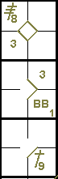

Game-ending hits.
Subject to the provisions of Rule 9.06(g),
when a batter ends a game with a safe hit that drives in as many runs as are necessary
to put his team in the lead, the official scorer shall credit such batter with only as many bases on his hit as are
advanced by the runner who scores the winning run, and then only if the batter runs out his hit for as many bases
as are advanced by the runner who scores the winning run
[OBR 9.06(f)].
Thus, if the runner who scores the winning run was on third base, it will be a single, even if the
hit was worth more. Similarly, if the runner is on second it will be a double and if on first it will be a triple,
provided that the batter-runner actually touches the bases. If, on the other hand, the batter runner stops on first
base and a runner on second scores the winning run, he is credited with a single, even though the scoring runner advanced
two bases.
However,
the official scorer shall credit the batter with a base touched in the natural course of
play, even if the winning run has scored moments before on the same play. For example, the score is tied in the
bottom of the ninth inning with a runner on second base and the batter hits a ball to the outfield that falls for
a base hit. The runner scores after the batter has touched first base and continued on to second base but shortly
before the batter-runner reaches second base. If the batter-runner reaches second base, the official scorer shall
credit the batter with a two-base hit.
>[OBR 9.06(f) Comment].
The only exception
is when the batter ends a game with a home run hit out of the playing field, the batter
and any runners on base are entitled to score
[OBR 9.06(g)].
Let us look at two examples of the above. In the ninth inning, with the score standing at 4 all,
the home team at bat and runners on first and third, the following situations occur:
Example 6:
The batter makes a safe hit and the runner on third scores the winning run. The batter is credited with a
single, regardless of the nature of his hit, and the final result will be 5:4 to the home team [OBR 7.01(g)(3)].

|
action {
batter -> 3B8
}
action {
batter -> BB
}
action {
batter -> 1B9
,
runner1 -> +
,
runner3 -> +
}
|

|
Example 7:
The batter hits a home run out of the field. The home run is credited to the batter as normal, and all runs
scored are allowed. The final result is 7:4 to the home team [OBR 7.01(g)(3) Exception].

|
action {
batter -> 3B8
}
action {
batter -> BB
}
action {
batter -> HR9
,
runner1 -> +++
,
runner3 -> +
}
|

|